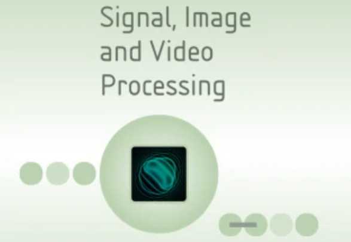
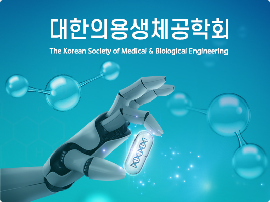

I'm a research engineer with a background in Image processing, Computer vision, and Foundation models. I received my M.S. from Seoul National University, where I focus on LiDAR-based 3D object detection in hospital environments. And I did B.S. from Gachon University, where I majored in medical image processing and AI-based diagnosis system. My current interests include computer vision, 3D perception, and AI systems for autonomous robotics.
Publications in image processing and computer vision, covering topics such as robot vision and the analysis of image characteristics unsuitable for AI model training. Research aims to improve the reliability and efficiency of visual recognition systems through data understanding and model optimization.

SALD-Net: Self-attention-integrated LiDAR-based 3D object detection network in a crowded hospital environment Goeun Kim,
Su Yang,
Ji Yong Han,
Jun-Min Kim,
Won-Jin Yi Signal, Image and Video Processing, 2025, 09
paper
A self-attention-integrated LiDAR-based 3D object detection algorithm enhancing perception accuracy and robustness in a complex hospital environment.
Intelligent Robot-Based Lidar Fusion Integrated Control System Development for Improvement of Medical Environments Goeun Kim,
Jaekwan Lim,
Changsun Ahn,
Jun-Min Kim Proceedings of KIIT Conference, 2023, 11
paper
A LiDAR-based integrated control system for managing autonomous hospital robots and ensuring safe interaction with humans and equipment.

A Radiomics-based Unread Cervical Imaging Classification Algorithm Go Eun Kim,
Young Jae Kim,
Woong Ju,
Kyehyun Nam,
Soonyung Kim,
Kwang Gi Kim Journal of Biomedical Engineering Research, 2021, 10
paper
A radiomics-based framework for pre-filtering unreadable cervical images to enhance AI diagnostic reliability and accuracy.
Projects
Research interests in computer vision, deep learning, generative AI, and foundation models, with a focus on developing perception systems for practical applications of AI. Presentation of non-published projects demonstrating applied development experience. For additional works beyond the main projects, see the link below.
Short, opinionated reviews of papers read — highlighting key ideas, methods, and relevance to computer vision or other interesting algorithmic concepts.
{kind=link}